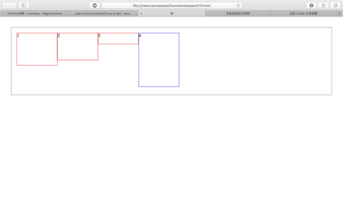
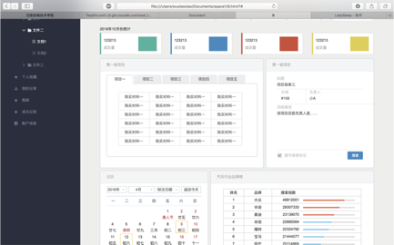
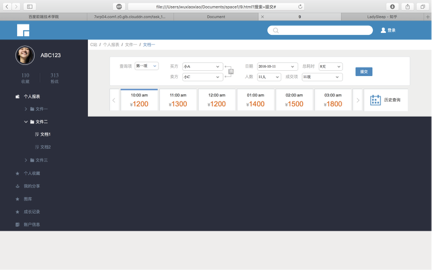

内容：每日的科研时间，成果，总结；
目标：成为一个牛逼的前端工程师，发表一篇会议论文，顺利毕业；
周期：2016年10月11日至2017年11月25日
计划：早8晚11*7、前端基础知识、写项目、刷题、背单词、健身
1月8日 周日
时间：晚上2h
成就：js。
12月30日 - 1月7日
旅行
12月29日 周四
时间：上午2h
成就：js。
12月28日 周三
时间：上午3h，下午3h,晚上4h
成就：做实验，混频器搭好了。
12月27日 周二
时间：上午3h，下午3h,晚上1h
成就：写论文，画图。重新做实验！！！
感悟：不奢求OECC了，感觉走进了死胡同。
12月26日 周一
时间：上午2h，下午2h,晚上3h
成就：写论文。
12月23日 周五
时间：上午2h，下午3h,晚上0h
成就：写论文。
12月22日 周四
时间：上午2h，下午5h,晚上4h
成就：刷3题，做完项目，写完了开题报告。
12月21日 周三
时间：上午2h，下午5h,晚上0h
成就：面试。
12月20日 周二
时间：上午2h，下午5h,晚上4h
成就：刷3题，做完项目，写完了开题报告，准备面试。
计划：先完成毕业论文开题，再学前端准备好面试，周三晚上开始处理数据，拿给老师看，然后周末写论文，要在29号之前写完全文。回来就去实习。
12月19日 周一
时间：上午1h，下午3h,晚上4h
成就：刷3题，写开题报告。
12月18日 周日
时间：上午0h，下午3h,晚上1h
成就：做gdt项目，写开题报告
12月17日 周六
时间：上午0h，下午3h,晚上4h
成就：刷3题，做gdt项目
12月16日 周五
时间：上午0h，下午2h,晚上2h
成就：做了一个项目
感悟：要赶紧处理数据，写论文，写开题报告，做完项目.
12月15日 周四
时间：上午0h，下午4h,晚上4h
成就：刷3题，制作简历，做了一个项目
12月14日 周三
时间：上午1h，下午2h,晚上0h
成就：刷3题
12月13日 周二
时间：上午0h，下午5h,晚上4h
成就：刷3题，晚上做实验，用铌酸锂调制器级联测了直接和相干的数据。
12月12日 周一
时间：上午1h，下午4h,晚上4h
成就：刷3题，晚上做实验，做完了直接探测，采了几组数据，接下来还需要采相干探测数据。
感悟：上周感觉前端没怎么进步，所以这周要制定学习计划，保证进度。
项目：做完4-5个；
书：看完3章（5，6，7）；
算法：一天三个（easy和medium一共340道，但是我也不用全部刷完，到3月初差不多能刷完）；
实验：这周必须做完一次得到数据，进行分析。
12月11日 周日
时间：上午1h，下午3h,晚上2h
成就：将域名dns改到cloudXNS，修改了一些bug，博客的新主题总算弄好了，以后还需要添加作品栏和简介栏。
12月10日 周六
时间：上午1h，下午0h,晚上通宵
成就：刷3题，和二师兄做实验调好了仪器，更改了博客的主题
感悟：因为一个bug而通宵这种事我还是经常干的，但是突然很怕自己会猝死。
12月9日 周五
时间：上午1h，下午3h,晚上0h
成就：刷3题，完成了项目18
12月8日 周四
时间：上午2h，下午0h,晚上0h
成就：刷3题
感悟：很容易放弃的一个人，但是没办法，人生太艰难。
12月7日 周三
时间：上午2h，下午4h,晚上5h
成就：刷3题，做完项目18，做实验
感悟：低调低调。
12月6日 周二
时间：上午2h，下午4h,晚上5h
成就：刷3题，下午和晚上去做了实验，搭好了平台，但是单路光出环形器之后功率不稳定，图像抖动严重，不知道怎么回事，换了个PC的原因吗？
感悟：OECC截稿日期1月17日，应该可以赶在那之前投稿，如果中了就可以去新加坡哈哈，抱紧晟博大腿。
12月5日 周一
时间：上午2h，下午4h,晚上5h
成就：刷3题，完成了ife项目17，学习了一点JSON
感悟：醉心科研，跑步都在看教学视频
12月4日 周日
时间：0
成就：滑雪S型更6️⃣了，下次要挑战单板！
12月3日 周六
时间：上午3h，下午2h,晚上5h
成就：刷3题，解决了问题，看了直播课程
感悟：今天的目标是：刷题+整理博客+学习JS+做ife项目+解决一些疑问
近期目标是：做完ife项目，刷完js高级教程。马上出去实习！
12月2日 周五
时间：上午2h，下午2h,晚上5h
成就：刷3题，学习了git，将ife项目上传到github上，注册了领英但有待完善，下载了推荐的书籍。
感悟：今天的目标是：刷题+整理博客+学习git+整理github+制作领英+下载书籍+学习JS+做ife项目
近期目标是：做完ife项目，刷完js高级教程。马上出去实习！
12月1日 周四
时间：上午2h，下午2h,晚上5h
成就：去参加了618的就业分享会，对目标更明确了。
感悟：目前主要方向就是：JavaScript以及其他前端技能，每天都要刷题50道，学习前端一直玩那个模块（3章以上）。12月去找实习。
11月30日 周三
时间：上午2h，下午2h,晚上5h
成就：完善了个人博客，并写了一篇博文。
11月29日 周二
时间：上午2h，下午2h,晚上5h
成就：个人hexo博客的搭建，刷题。
11月28日 周一
时间：上午2h，下午2h,晚上5h
成就：买器件，个人博客的搭建。
11月27日 周日
时间：0
成就：滑雪
11月26日 周六
时间：上午2h，下午2h,晚上5h
成就：完成了个人hexo博客的搭建！xxwu.tech
11月25日 周五
时间：上午1h，下午2h,晚上5h
成就：和大师兄视频解决了论文思路，参加就业交流会打了一腔鸡血
感悟：
1.刷算法和学前端不相干，所以应该现在开始刷题；
2.面试不仅限于基础知识，所以应该开始刷面试题；
3.时间真的很紧张，在接下来的12月里我需要针对简历上标红的部分进行补漏，开始刷算法题，尽早出去实习。
11月24日 周四
时间：上午2h，下午5h
成就：百度ife项目17，做实验.跨浏览器事件绑定
11月23日 周三
时间：上午2h,下午2h
成就：
感悟：
昨天突然想做一个小应用，由于现在大家的钱都放在不同的地方，比如银行卡，信用卡，支付宝，微信，一卡通等，其实一般的记账软件根本无法满足记账功能，你每天都记，但是仍然不知道自己有多少钱。所以为什么不自己写一个记账小应用，or，my day,记录一天的学习，运动，天气，收入支出，而且，我要用微信小程序写！
11月21、22日 周一周二
实习去了，没有学习
11月20日 周日
时间：晚上2h
成就：ife项目17一点点进展
11月19日 周六
时间：下午2.5h
成就：
1.完成了daycheck的编辑工作
11月18日 周五
时间：上午3h,下午4h
成就：ife项目16;安装了webstorm，dash，alfred，clearmymac，markdown，solarized，github desktop，都有待研究。
11月17日 周四
时间：上午1h,下午4h，晚上2h
成就：ife项目13,14,15
感悟：昨天初步接触react，觉得有点难度，而且自己的JS 基础不够扎实，所以应该先做几个项目练练手，然后再去系统的学习一个框架。
不知道其他人是不是这样，念书的时候，很容易就能看出哪些同学注定了以后能干成比较大的事情，不一定是注定会发财或者说出人头地，但一看就和我这种碌碌之辈不一样。他们不一定学习成绩很好或者家境殷实有背景或者做人活泛很吃得开，有些人可能各种表现都一般甚至可能心思都不在拿学位上。但是他们共同拥有一些品格和美德：比如心气很高，思维开阔，做事情稳准狠，静得下心沉得住气，非常有担当，性格豁达，重情义，相当有毅力，对自己特别狠。还有就是，他们有特别想做成一番大事业的欲望和掩饰不住的好胜心。古人讲发大愿者必有魔考，他们脑子里清清楚楚地能分辨什么是最重要的，什么并不重要，他们愿意牺牲太多去实现他们的目的。面对这种同学我从来不敢开玩笑说苟富贵勿相忘，一向是该配合就配合该闭嘴就闭嘴该让路就让路，因为他们根本看不见我，我在他们面前连说这句话的资格都没有。
11月16日 周三
时间：上午2h,下午4h
成就：放弃《jQuery基础》（四），学习了《AJAX》和一点点《React》
11月15日 周二
时间：上午2.5h,下午4h
成就：完成《jQuery基础》(三)
11月14日 周一
时间：上午2h,下午3h,晚上2h
成就：学到《jQuery基础》(三) 3.1
11月13日 周日
时间：上午0h,下午8h
成就：学完《jQuery基础》(二)，学到《jQuery基础》(三) 2.2
11月12日 周六
时间：上午2h,下午4h
成就：学到《jQuery基础》(二)5.5
感悟：多自习，少睡觉
11月11日 周五
时间：上午1h,下午4h，晚上2h
成就：学完《jQuery基础》(一),学到《jQuery基础》(二) 4.5
感悟：
差不多了解了jQuery的用途，按照大牛给的学习路线，应该在学好HTML5和CSS的前提下，学习原生JS，再学习jQuery框架，大致掌握之后就可以抛弃jQuery，然后好好啃JS高级教程，然后再去学react，Vue，nodejs，ajax~还有很长的路要走！本周学完jQuery四章，然后下周啃完JS，下下周啃react，Vue，nodejs，ajax；然后在准备一下面试，十二月出去实习！
11月10日 周四
时间：上午2h,下午2h
成就：学到《jQuery基础》3.3
11月9日 周三
时间：上午0h,下午 5h
成就：学到《jQuery基础》2.9
11月8日 周二
时间：上午3h,下午2h
成就：学到《jQuery基础》2.1
11月7日 周一
时间：上午2h,下午3h
成就：
1.学习《JS动画》到4.2
2.学习《jQuery基础》到1.4
11月3日 周四
时间：上午2h,下午2h
成就：完成了dom事件处理。
11月2日 周三
时间：上午2h,下午2h
成就：看了黑镜一二季
11月1日 周二
时间：上午1h,下午2h
成就：完成《js进阶》，《dom事件》第三章
10月31日 周一
时间：上午2h,下午2h
成就：nothing
10月28日 周五
时间：上午2h,下午2h
成就：不记得了，学到了《JS进阶》9.14
10月27日 周四
时间：上午3h
成就：第九章 DOM
10月26日 周三
时间：上午1h,下午2h
成就：完成第七章编程练习;《JS进阶》第八章 内置对象
感悟：
1.把显示器连在电脑上，瞬间感觉码农气息满满，开心，还买了优衣库码农专用外套。
10月25日 周二
时间：上午2.5h,下午1h
成就：《JS进阶》第七章 事件响应
10月24日 周一
时间：上午2h,下午3h,晚上0.
成就：
1．《JS进阶》第六章
感悟：switch(se){}的括号里不用加引号，加了就错了！
10月22日23日 周末
成就：
1.《JS进阶》第四章完成
2.《JS进阶》第五章完成
感悟：加油！
10月21日
时间：上午2h
成就：
1.《JS进阶》第二章
2.《JS进阶》第三章
10月20日 周四
时间：上午2h.下午4h，晚上0。
成就：js进阶篇,ife项目13
感悟：原来JS没有想象中的那么高深，也是一些基础语法加上一些函数，下一步想快速过完《JS进阶》然后刷完《JS高级教程》。10月底刷完吧。
10月19日 周三
时间：上午2h,下午3h,晚上1h
成就：
开始学习《JS入门》,学到了4.1编程练习
10月18日 周二
时间：上午2h,下午1h,晚上0
成就：下载了王子南等人的论文。准备开始学习JS.
感悟：生日快乐~
10月17日 周一
时间：上午2h,下午4h，晚上0
成就：
1安装了Xcode和MATLAB，并将OTDR仿真导入；
2写了一点移动端页面
3大师兄说了相干检测强度问题的闭塞，别人都在处理数据检测相位了，啊，仿真的东西一点价值都没有。
感悟：移动端的html简单，但是css还真不一样。还有待摸索。
10月14日
时间：上午1h,下午1h
成就：nothing
感悟：又懒惰了。
10月13日
时间：上午2h,下午1h
成就：学习了flexbox布局和移动端web，但是没有学会，晚上还没来学习。

感悟：温饱思淫欲，别人也是三月份开始学习的，别人就已经实习三个月并且掌握了个大概了，你还有什么理由不努力啊。
我也是研一下开始学的，大概三月中旬，学HTML和CSS基础小一个月，中间一些练习用的IFE，不过后来第二阶段JS不会，又开始啃原生JS，看基础，看完基础看JS高级程序设计。穿插着做了一点点练习，到四月底开始学Jquery，边敲代码过了一遍书。但是那时候对AJAX之类的还是不太熟悉。之后在慕课网学了点小东西，做相册啊什么的用到了zeptojs，对了期间做的一个东西还学了下bootstrap。六月份听说了React不错，学之。觉得很神奇，所以用React做了个小项目。然后学到大概六月底，20多号好像是。投了两个简历，面试了一个，过了。7月到9月愉快的实习了3个月，一开始实习的时候觉得，我的天呀，头儿给的任务，半天做不出啥。不过大概一周以后就比较顺手啦，用的React，然后ES6的语法，所以就边做边学。期间经历了挺多事，接触了加密，数据可视化，canvas···· 到现在不到七个月，觉得进步还是有一些的，但是还是发现很多东西不懂，打算在学校沉淀三四个月，查漏补缺，再去尝试新的实习。分享一下，一起加油吧~
10月12日
时间：上午3h，下午3h，晚上0h
成就：完成了ife项目9

感悟：中午在论坛上发了个帖子，表示自己很迷茫。后来我想明白了，我连JS都还没接触，当然不知所云，一脸懵逼。只要踏踏实实地做项目，看书，一定可以入门的。我连通原都能学好，这点东西难不倒我！明天接着做手机版网页，然后，一定要休息好，别熬夜了。
10月11日
时间：上午2h,下午3h,晚上3h
成就：完成了ife项目9的header和部分div，具体如图：

感悟：可以自己发现并修改一些bug,但是还是缺乏自己思考html结构和css描述的能力。我现在还属于学习基础的阶段，迷茫是正常的，但是不应该放弃，要把细碎的知识整合起来。要在本周内完成第一阶段的所有项目，然后下周开始学习JS。
- 1月8日 周日
- 12月30日 - 1月7日
- 12月29日 周四
- 12月28日 周三
- 12月27日 周二
- 12月26日 周一
- 12月23日 周五
- 12月22日 周四
- 12月21日 周三
- 12月20日 周二
- 12月19日 周一
- 12月18日 周日
- 12月17日 周六
- 12月16日 周五
- 12月15日 周四
- 12月14日 周三
- 12月13日 周二
- 12月12日 周一
- 12月11日 周日
- 12月10日 周六
- 12月9日 周五
- 12月8日 周四
- 12月7日 周三
- 12月6日 周二
- 12月5日 周一
- 12月4日 周日
- 12月3日 周六
- 12月2日 周五
- 12月1日 周四
- 11月30日 周三
- 11月29日 周二
- 11月28日 周一
- 11月27日 周日
- 11月26日 周六
- 11月25日 周五
- 11月24日 周四
- 11月23日 周三
- 11月21、22日 周一周二
- 11月20日 周日
- 11月19日 周六
- 11月18日 周五
- 11月17日 周四
- 11月16日 周三
- 11月15日 周二
- 11月14日 周一
- 11月13日 周日
- 11月12日 周六
- 11月11日 周五
- 11月10日 周四
- 11月9日 周三
- 11月8日 周二
- 11月7日 周一
- 11月3日 周四
- 11月2日 周三
- 11月1日 周二
- 10月31日 周一
- 10月28日 周五
- 10月27日 周四
- 10月26日 周三
- 10月25日 周二
- 10月24日 周一
- 10月22日23日 周末
- 10月21日
- 10月20日 周四
- 10月19日 周三
- 10月18日 周二
- 10月17日 周一
- 10月14日
- 10月13日
- 10月12日
- 10月11日